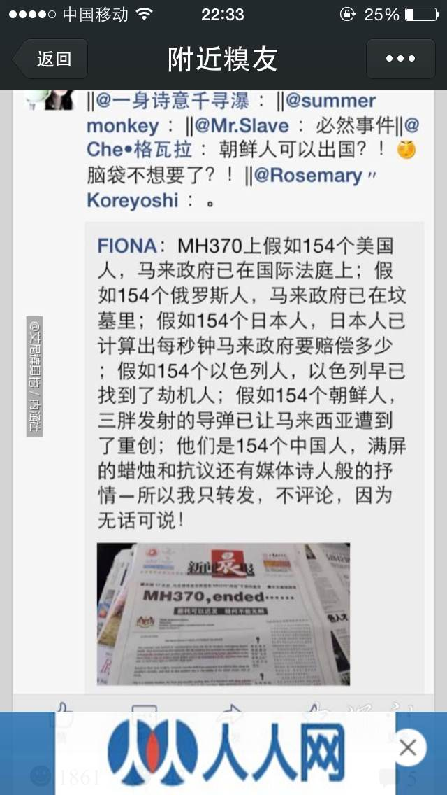

Conversation with 81184027 at Wed 02 Apr 2014 06:17:44 PM CST on 154115835 (webqq)
(06:17:10 PM) 3711314514: 总而言之，只要不躺着就行
(06:17:10 PM) 大迷糊: 总而言之，只要不躺着就行
(04/02/2014 04:02:21 PM) pastorqi: 4月2日，2014年的第92天。
天天主恩惠,福满溢灵程!
愿我们收获活水吗哪，对神发出感谢赞美
旧约 申 21：-22：
诗 74:
箴 12:11
新约 路9:51-10：12
(06:11:54 PM) 阿萨汗蛋包飯: 我总梦见一台灵车慢慢向自己推过来，死人从车上突然坐起来扑向我……
(04/02/2014 04:12:58 PM) 宁静的茶: http://xmwb.xinmin.cn/html/2014-03/29/content_29_1.htm 请大家看看 对比李连杰
http://www.beiwody.com/v/40350.html 请大家看看 美国的医闹电影 感动的想哭啊
(06:13:20 PM) 大迷糊: 我也梦到过类似的，有好多人在一个大坑里，拉我下去，
(06:14:15 PM) 阿萨汗蛋包飯: 动弹不了，但身体却陷下去
(06:13:48 PM) 阿萨汗蛋包飯: 梦里我最怕的是鬼压身
(06:14:47 PM) 大迷糊: 睡觉的时候侧着身子45度
(06:14:08 PM) 大迷糊: 精神压力大
(06:15:13 PM) 埃及无雪: 和你工作有关系吧
(06:14:53 PM) 大迷糊: 就没事了
(06:15:36 PM) 大迷糊: 睡觉的时候侧着身子45度就行
(06:15:00 PM) 埃及无雪: :face55::face55::face55::face55:
(06:16:11 PM) 阿萨汗蛋包飯: 右侧睡比较好，但睡着以后会变动
(06:15:06 PM) 阿萨汗蛋包飯: 然后醒来就是一身汗
(06:17:10 PM) 大迷糊: 总而言之，只要不躺着就行
(06:15:23 PM) 阿萨汗蛋包飯: 把冷汗擦了再睡。。。嗯
(06:15:49 PM) 大迷糊: 右侧
(06:16:47 PM) 大迷糊: 背部靠着墙
(04/02/2014 05:39:21 PM) 大迷糊: 
(10:14:00 PM) The account has disconnected and you are no longer in this chat. You will automatically rejoin the chat when the account reconnects.